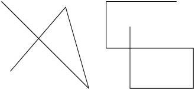
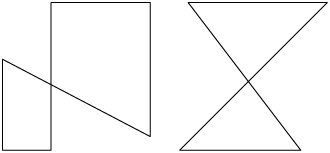
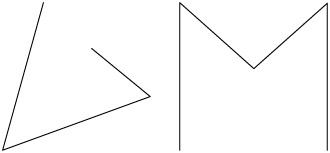
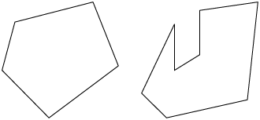

Página 154
unidade
8
Polígonos e figuras semelhantes
Nesta unidade, você vai:
- reconhecer polígonos e regiões poligonais, além de identificar seus elementos;
- classificar polígonos conforme a quantidade de lados, de vértices e de ângulos internos;
- identificar polígonos convexos, não convexos e regulares;
- reconhecer e classificar triângulos de acordo com a medida dos lados e de acordo com a medida dos ângulos internos;
- reconhecer e classificar quadriláteros em paralelogramo ou trapézio;
- classificar paralelogramos em retângulo, losango ou quadrado;
- realizar ampliação, redução e reprodução de figuras a partir de determinada escala.
Página 155
A bandeira nacional brasileira foi instituída em 19 de novembro de 1889, quatro dias após a Proclamação da República. Nela, é possível identificar algumas figuras geométricas planas, como retângulo, losango e círculo.
As estrelas presentes na bandeira nacional representam o céu do Rio de Janeiro às do dia 15 de novembro de 1889, data em que a República foi proclamada. Cada estrela representa uma unidade da Federação, que atualmente é composta por 26 estados e um Distrito Federal.

Página 156
Trilha
38
Polígonos
Carlos desenhou algumas figuras utilizando um aplicativo de seu tablet.
As linhas desenhadas por Carlos são representações de linhas poligonais ou simplesmente poligonais. Esse tipo de linha é formado por segmentos de reta consecutivos e não colineares, ou seja, que não pertencem à mesma reta.
Podemos classificar as linhas poligonais da seguinte maneira.
| Linha poligonal | Aberta | Fechada |
|---|---|---|
| Não simples (há segmentos que se cruzam) |  |  |
| Simples (não há segmentos que se cruzam) |  |  |
- Classifique cada uma das linhas poligonais desenhadas por Carlos em aberta ou fechada e em simples ou não simples.
Polígono é o nome dado a uma linha poligonal simples e fechada. Cada segmento de reta que compõe essa linha poligonal é um lado do polígono.
Polígono é uma palavra de origem grega em que poli significa muitos e gono significa ângulos.
Página 157
A região delimitada por um polígono corresponde à sua região interna. A reunião de um polígono com sua região interna recebe o nome de região poligonal. Também usamos a palavra "polígono" quando nos referimos às regiões poligonais.
A seguir, apresentamos alguns exemplos de polígonos.
No polígono ABCD, podemos notar:
- 4 lados: , , e .
- 4 vértices: A, B, C e D.
- 4 ângulos internos: , , e .
- Na página anterior, qual das figuras que Carlos desenhou é um polígono? Justifique sua resposta.
Classificação dos polígonos
A inspiração para muitos artistas realizarem seus trabalhos pode ocorrer de várias maneiras. Alguns deles utilizam figuras geométricas e polígonos em suas obras, como a tela do artista holandês Theo van Doesburg representada na imagem a seguir.
Página 158
Os polígonos podem ser classificados de acordo com a quantidade de lados, vértices e ângulos internos.
Fica a dica
- Se você fosse um polígono, de Marcie Aboff. Editora Gaivota, 2011.
Nesse livro, você vai perceber o conceito de polígono em diversas situações do dia a dia, desenvolvendo de maneira divertida sua relação com outras figuras.
Polígonos convexos e polígonos não convexos
Os polígonos podem ser classificados em convexos e não convexos.
- Cada polígono a seguir é convexo, pois todo segmento de reta cujas extremidades estão no interior desse polígono tem todos os seus pontos no interior do polígono.
Página 159
- Cada polígono a seguir é não convexo, pois existe pelo menos um segmento de reta cujas extremidades estão no interior desse polígono, sem que todos os seus pontos estejam no interior do polígono.
Polígonos regulares
A seguir estão representados alguns polígonos que têm certas características.
Em cada um desses polígonos, todos os lados têm a mesma medida de comprimento e todos os ângulos internos têm a mesma medida de abertura. Dizemos, então, que esses polígonos são regulares.
- O quadrado é um polígono regular? Por quê?
Atividades
1. A seguir, estão representadas algumas figuras.
a) Quais dessas figuras representam linhas poligonais?
b) Classifique as linhas poligonais do item anterior em fechada ou aberta e em simples ou não simples.
c) Quais dessas figuras são polígonos?
Página 160
2. Identifique os vértices, os lados e os ângulos internos de cada polígono.
3. A seguir, estão apresentadas as planificações de duas figuras geométricas espaciais.
a) Qual das planificações é composta apenas por polígonos? Quais são esses polígonos?
b) Qual é o nome da figura geométrica espacial correspondente à planificação I? E à planificação II?
4. Quais polígonos podemos identificar nas faces da figura geométrica espacial representada a seguir?
5. Analise a figura a seguir.
Sobre essa figura, é correto afirmar que:
a) é um hexágono.
b) é um polígono não convexo.
c) é um polígono regular.
d) não é um polígono.
6. Classifique os polígonos em relação à quantidade de lados, de vértices e de ângulos internos.
Retorne aos itens desta atividade e classifique cada polígono em convexo ou não convexo.
7. As faces de um cubo são polígonos regulares? Por quê?
Página 161
8. Os polígonos a seguir foram formados utilizando as 7 peças do tangram.
a) Classifique cada um desses polígonos em relação à quantidade de lados, de vértices e de ângulos internos.
b) Quais desses polígonos são convexos? E quais são não convexos?
9. Desenhe em seu caderno um polígono qualquer. Depois, peça a um colega que o classifique em relação à quantidade de lados, de vértices e de ângulos internos. Por fim, confira se a resposta de seu colega está correta.
10.  Elabore duas questões relacionadas à imagem a seguir e entregue para um colega resolver.
Elabore duas questões relacionadas à imagem a seguir e entregue para um colega resolver.
Não se esqueça de conferir se a resposta apresentada por seu colega está correta.
11. Escreva em seu caderno uma semelhança e uma diferença entre os polígonos apresentados a seguir.
Página 162
12. Com base nas medidas indicadas, classifique cada polígono em regular ou não regular.
a) O que os polígonos classificados como regulares têm em comum?
b) Compare os polígonos II e III, destacando algo em que são parecidos e algo em que são diferentes.
13. O Código de Trânsito Brasileiro (CTB) é o instrumento que regulamenta os direitos e deveres de motoristas e pedestres. Respeitar o CTB é garantir menos acidentes e, consequentemente, menos vítimas.
A seguir estão representadas algumas placas de sinalização de trânsito.
a) Associe cada placa ao seu significado. Para isso, relacione a letra e o símbolo romano correspondentes.
I) Rodovias e estradas estaduais.
II) Passagem sinalizada de escolares.
III) Parada obrigatória.
IV) Dê preferência.
b) Quais polígonos podem ser associados a essas placas?
14. Escreva em seu caderno o nome dos polígonos utilizados para compor o mosaico a seguir.
Página 163
Matemática em destaque
15. Luiz Sacilotto (1924-2003) foi um pintor, escultor e desenhista brasileiro. Filho de imigrantes italianos, nasceu em Santo André, no estado de São Paulo, e se destacou na pintura por utilizar a Geometria. Suas obras apresentam, entre outros aspectos, uma ilusão de óptica sugerida nas combinações de cores, linhas e ângulos rigidamente traçados.
Na imagem a seguir é apresentada uma das telas de Sacilotto em que aparecem figuras poligonais.
Fica a dica
- Sacilotto, em: https://tedit.net/qWJY99. Acesso em: 28 abr. 2022.
Nesse site você vai encontrar diversos materiais do artista, como obras, textos, exposições e sua bibliografia.
a) Qual é o nome da tela de Sacilotto apresentada na imagem? Em que ano ela foi produzida?
b) Na tela, todas as partes de mesma cor também têm o mesmo formato? Justifique sua resposta.
c) Quais polígonos podem ser verificados nessa tela?
d) Com uma régua, faça um desenho composto apenas por polígonos, em uma folha de papel sulfite, como na tela de Luiz Sacilotto.
e) Junte-se a um colega e pesquisem outras informações sobre a vida e as obras de Luiz Sacilotto e do holandês Theo van Doesburg, apresentado no início desta unidade. Com as informações coletadas, realizem o seguinte trabalho no caderno.
- Identifiquem e listem semelhanças e diferenças entre as produções desses dois artistas.
- Registrem as características artísticas que marcaram a época de cada um deles.
- Criem um texto para expressar a importância da Geometria nos traçados e composições de Sacilotto e de Theo van Doesburg.
Complementem o texto apresentando informações sobre o legado deixado por esses dois artistas para a comunidade e a região em que viveram.
Prática de pesquisa
Página 164
Trilha
39
Triângulos
A bandeira do estado de Minas Gerais, representada na imagem, é composta de uma figura geométrica vermelha contornada por uma expressão latina que significa "Liberdade ainda que tardia". A figura vermelha presente nessa bandeira é chamada triângulo.
No triângulo ABC, podemos destacar os seguintes elementos.
- 3 lados: , e .
- 3 vértices: A, B e C.
- 3 ângulos internos: , e .
Esse triângulo pode ser nomeado de duas maneiras: triângulo ABC ou .
Classificação dos triângulos
Os triângulos podem ser classificados de acordo com a medida do comprimento de seus lados ou com as medidas de seus ângulos internos.
Classificação quanto à medida do comprimento dos lados
- Triângulo equilátero
Triângulo que tem todos os lados com a mesma medida de comprimento.
O prefixo equi significa igualdade.
- Triângulo isósceles
Triângulo que tem pelo menos dois lados com a mesma medida de comprimento.
- Triângulo escaleno
Triângulo que tem todos os lados com medidas de comprimento diferentes entre si.
, e
Indicamos por AB, por exemplo, a medida do comprimento de .
Página 165
Classificação quanto à medida dos ângulos internos
- Triângulo retângulo
Triângulo que tem um ângulo reto.
- Triângulo acutângulo
Triângulo que tem todos os ângulos internos agudos.
- Triângulo obtusângulo
Triângulo que tem um ângulo interno obtuso.
- O que é necessário em um triângulo para que ele seja isósceles e retângulo ao mesmo tempo?
Atividades
16. Escreva em seu caderno o nome de alguns objetos que lembram triângulos. Compare sua resposta com a de um colega.
17. Nomeie e identifique os vértices, os lados e os ângulos internos de cada triângulo.
18. O esquema a seguir lembra um triângulo construído com seis palitos.
Copie o esquema em seu caderno mudando a posição de dois palitos para obter um esquema que lembre dois triângulos menores.
19. Quantos triângulos é possível identificar na figura a seguir? Nomeie cada um deles.
20. Nomeie os triângulos que correspondem às faces de cada pirâmide.
Página 166
21. Com o auxílio de uma régua, meça o comprimento dos lados dos triângulos e classifique cada um deles em equilátero, isósceles ou escaleno.
Todo triângulo equilátero também é isósceles.
22. O hexágono regular a seguir foi decomposto em quantos triângulos?
Com o auxílio de uma régua, meça o comprimento dos lados dos triângulos e classifique-os em equiláteros, isósceles ou escalenos.
23. Em cada item, classifique o triângulo quanto à medida do comprimento de seus lados.
-
a)
, e -
b)
, e -
c)
, e
24. Analise os triângulos na malha quadriculada a seguir e classifique cada um deles em retângulo, acutângulo ou obtusângulo.
25. Utilizando um transferidor, determine a medida dos ângulos internos do .
a) Classifique esse triângulo quanto à medida de seus ângulos internos.
b) Esse triângulo tem um par de ângulos internos com medidas iguais? Qual é a medida de cada um deles?
c) Com o auxílio de uma régua, classifique o triângulo quanto à medida do comprimento de seus lados.
d) Calcule a medida aproximada do perímetro desse triângulo.
A medida do perímetro de um polígono é igual à soma das medidas dos comprimentos de seus lados.
26. Classifique os triângulos que compõem o tangram desenhado na malha quadriculada quanto à medida:
a) do comprimento de seus lados.
b) de seus ângulos internos.
Página 167
Trilha
40
Quadriláteros
Alguns formatos que lembram figuras geométricas planas podem ser observados em situações comuns do dia a dia.
Por exemplo, na imagem apresentada, as ruas Inglaterra, Peru, França e México limitam um quarteirão cujo contorno lembra uma figura geométrica plana chamada quadrilátero.
![Imagem de um mapa de várias ruas. Vários dos quarteirões lembram quadriláteros, sendo eles: um é limitado pelas ruas Grécia, África, Bolívia e Equador; outro é limitado pelas ruas Bolívia, Equador, Inglaterra e África; outro é limitado pelas ruas Grécia, Canadá, Inglaterra e Equador; outro quarteirão é limitado pelas ruas Peru, Itália, Chile e Inglaterra; outro é limitado pelas ruas Peru, Inglaterra, México e França; outro pelas ruas França, Japão, Suécia, México; e outro é limitado pelas ruas Japão, China, México e Suécia.](../resources/images/un8/i3304_6sam_g24_e003_re.png)
No quadrilátero apresentado, identificamos os seguintes elementos:
- 4 lados:
, , e .
- 4 vértices:
A, B, C e D.
- 4 ângulos internos:
, , e .
Podemos nomear um quadrilátero com base nas letras que representam os seus vértices, isto é, no exemplo anterior temos o quadrilátero ABCD.
- Identifique no mapa outros dois quarteirões que lembram quadriláteros e indique seus contornos citando as ruas que os limitam.
Classificação dos quadriláteros
Alguns quadriláteros podem ser classificados como paralelogramo ou trapézio.
- Paralelogramo
Quadrilátero que tem dois pares de lados paralelos. Nesse caso, os ângulos internos opostos têm medidas iguais e os lados opostos têm a mesma medida de comprimento.
No paralelogramo ABCD, temos:
- Trapézio
Quadrilátero que tem apenas um par de lados paralelos.
No trapézio ABCD, temos:
Há quadriláteros que não são paralelogramos nem trapézios, como os dos exemplos a seguir.
Página 168
Classificação dos paralelogramos
Alguns paralelogramos podem ser classificados de acordo com a medida do comprimento de seus lados e a medida de seus ângulos internos.
- Retângulo
Paralelogramo que tem os quatro ângulos internos retos.
- Losango
Paralelogramo que tem os quatro lados com a mesma medida de comprimento.
- Quadrado
Paralelogramo que tem os quatro ângulos internos retos e os quatro lados com a mesma medida de comprimento.
- Por que o quadrado é, ao mesmo tempo, retângulo e losango?
Atividades
27. Escreva em seu caderno o nome de alguns objetos ou imagens que lembram quadriláteros. Compare sua resposta com a de um colega.
28. Nomeie e identifique os vértices, os lados e os ângulos internos de cada quadrilátero.
29. Determine quantos quadriláteros é possível identificar na figura e nomeie cada um deles.
30. Os quadriláteros a seguir foram formados com as peças do tangram. Utilizando um transferidor, determine a medida de cada um dos ângulos internos desses quadriláteros. Depois classifique-os em trapézio, retângulo, losango ou quadrado.
31. Utilizando régua e esquadros, construa:
a) um paralelogramo.
b) um trapézio.
Para construir os quadriláteros indicados, utilize o processo de construção de retas paralelas apresentado na unidade 7 deste volume.
Na seção Explorando tecnologias, ao final deste volume, são apresentadas instruções sobre como utilizar um software de geometria para construir um retângulo.
Página 169
32. O esquema representado na imagem foi construído com palitos.
a)Quantos palitos foram utilizados?
b) No esquema, quantas figuras que lembram quadrados podem ser identificadas?
c) Copie o esquema no caderno retirando dois palitos de maneira que seja possível identificar apenas duas figuras que lembrem quadrados.
33.  Com base nas orientações dadas para a construção de retas perpendiculares utilizando dobradura, apresentadas na unidade 7 deste volume, construa e desenhe em uma folha de papel um retângulo.
Com base nas orientações dadas para a construção de retas perpendiculares utilizando dobradura, apresentadas na unidade 7 deste volume, construa e desenhe em uma folha de papel um retângulo.
34. Analise os registros de Mariana e Felipe.
Mariana
O quadrado tem quatro lados com a mesma medida de comprimento, dois pares de lados paralelos e quatro ângulos internos retos.
Felipe
O retângulo tem quatro lados, sendo dois pares de lados paralelos e quatro ângulos internos retos.
De acordo com as anotações de Mariana e Felipe, indique qual alternativa está correta.
a) Todo retângulo também é um quadrado.
b) Todo quadrado também é um retângulo.
35. Classifique cada afirmação em verdadeira ou falsa.
a) O paralelogramo tem apenas um par de lados paralelos.
b) Todo retângulo é um paralelogramo e todo paralelogramo é um quadrilátero. Então, todo retângulo é um quadrilátero.
c) O losango tem todos os lados com a mesma medida de comprimento.
d) Um trapézio é um quadrilátero com apenas um par de lados paralelos.
e) O quadrado também é um trapézio.
Agora, copie em seu caderno as afirmações falsas fazendo as correções necessárias para torná-las verdadeiras.
36. Determine quais dos quadriláteros apresentados na malha quadriculada são paralelogramos e quais são trapézios.
![Imagem de uma malha quadriculada com 10 figuras. A figura A é um quadrilátero que não tem nenhum par de lados paralelos. A figura B é um quadrilátero com dois pares de lados paralelos, sendo que cada par tem a mesma medida de comprimento. A figura C é um quadrilátero com um par de lados paralelos. A figura D é um quadrilátero com dois pares de lados paralelos e com medida de altura igual a da largura. A figura E é um quadrilátero com dois pares de lados paralelos, e com medida de altura diferente da medida da largura. A figura F é um quadrilátero com dois pares de lados paralelos, em que dois lados estão na vertical e outros dois na diagonal. A figura G é um quadrilátero com um par de lados paralelos. A figura I é um quadrilátero com dois pares de lados paralelos e com medida de altura igual a da largura. A figura J é um quadrilátero com dois pares de lados paralelos, em que dois dos lados estão na horizontal e dois na diagonal.](../resources/images/un8/g24_6sam_y255159Zr.png)
a)Classifique os paralelogramos destacados em losango ou retângulo e, entre esses, indique em seu caderno quais são quadrados.
b) Com base em sua classificação, responda às questões com sim ou não.
- O trapézio pode ser um losango?
- Todo quadrilátero é paralelogramo ou trapézio?
- Um quadrado é retângulo e losango?
- Todo losango é paralelogramo?
Página 170
Trilha
41
Ampliação, redução e reprodução de figuras
Em uma loja especializada, Ana solicitou que fossem produzidas uma ampliação e uma redução de certa fotografia original.
Na ampliação e na redução apresentadas, manteve-se o formato dos elementos da fotografia, apesar de as dimensões terem medidas diferentes da original.
Agora, vamos analisar a reprodução, a ampliação e a redução de um retângulo em uma mesma malha quadriculada.
![Imagem de malha quadriculada com 4 retângulos desenhados. O primeiro está com a legenda 'original'. Ele tem 2 quadrados de largura e 4 de altura. O segundo retângulo está com a legenda 'ampliação'. Ele tem 4 quadrados de largura e 8 de altura. O terceiro retângulo está com a legenda 'redução'. Ele tem 1 quadrado de largura e 2 de altura. O quarto retângulo está com a legenda 'reprodução'. Ele tem 2 quadrados de largura e 4 de altura. Em todos os retângulos, o lado a direita está representado em verde, o lado a esquerda está representado em vermelho, o lado da parte superior está representado em azul, e o lado da parte inferior está representado em roxo. Além disso, os respectivos ângulos internos estão representados com a mesma cor em cada retângulo.](../resources/images/un8/g24_6sam_q560403Ya.png)
Nos retângulos construídos, os lados indicados com mesma cor são chamados correspondentes, assim como os ângulos indicados com mesma cor.
Página 171
Analise os seguintes fatos.
- Para obter a medida do comprimento de cada lado da ampliação, multiplicamos por um mesmo número a medida do comprimento de cada lado correspondente da figura original. Neste caso, multiplicamos por 2.
- Para obter a medida do comprimento de cada lado da redução, dividimos por um mesmo número a medida do comprimento de cada lado correspondente da figura original. Neste caso, dividimos por 2.
- A medida do comprimento de cada lado da reprodução é igual à medida do comprimento de cada lado correspondente da figura original.
- Na ampliação, na redução e na reprodução, as medidas dos ângulos são iguais às medidas dos ângulos correspondentes da figura original.
A ampliação e a redução também podem ser feitas em malhas com medida do comprimento do lado de cada quadradinho maior ou menor do que o da malha original, respectivamente.
Na ampliação, na redução ou na reprodução, o formato das figuras é o mesmo.
Ao ampliar, reduzir ou reproduzir uma figura, dizemos que a figura original e a figura obtida são figuras semelhantes.
Na seção Explorando tecnologias, ao final deste volume, são apresentadas instruções sobre como utilizar um software de geometria para construir figuras semelhantes.
- Cite algumas situações em que é necessário ampliar ou reduzir uma figura.
Escala
Para realizar uma ampliação e uma redução, a imagem original foi quadriculada utilizando quadradinhos com lados medindo de comprimento.
Página 172
Em seguida, ela foi copiada em uma malha quadriculada com quadradinhos cuja medida do comprimento do lado é e em outra com quadradinhos cuja medida do comprimento do lado é .
Na imagem reduzida, cada correspondem a na imagem original. Essa redução pode ser representada por meio da seguinte razão, conhecida como escala.
Como , dizemos que a escala de redução é ou .
Do mesmo modo, na imagem ampliada, cada correspondem a na imagem original. Essa ampliação pode ser representada pela seguinte escala.
Como , dizemos que a escala de ampliação é ou .
- Ao fazer uma reprodução da imagem original, qual será a escala utilizada?
Página 173
Atividades
37. As figuras a seguir foram construídas na mesma malha quadriculada.
![Imagem de uma malha quadriculada com 4 figuras. Todas elas têm o mesmo formato sendo semelhantes há um lápis, composto por um retângulo em cor vermelha e a ponta representada por um triângulo em cor azul. Na figura 1, o retângulo é composto por 12 quadradinhos da malha, e o triângulo por 2 quadradinhos. A figura 2 tem o retângulo composto por 48 quadradinhos da malha e o triângulo por 8 quadradinhos. A figura 3 tem o retângulo composto por 3 quadradinhos e o triângulo é composto por metade de um quadradinho da malha. E a figura 4 tem o retângulo composto por 108 quadradinhos da malha e o triângulo é composto por 18 quadradinhos da malha.](../resources/images/un8/g24_6sam_r622464Fb.png)
a) As figuras apresentadas na malha são semelhantes? Justifique sua resposta.
b) Quais figuras representam uma redução em relação à figura II?
c) Quais figuras representam uma ampliação em relação à figura I?
38. Com uma máquina fotocopiadora, Leandro fez algumas cópias de uma imagem original.
a) Quais imagens são ampliações da imagem III? E qual é uma redução dessa imagem?
b) Qual é a imagem original, considerando que a imagem V é uma ampliação da original e a III uma redução?
Página 174
39. As imagens a seguir são semelhantes.
a) Considerando a imagem I como a original e utilizando uma régua, determine a escala utilizada em cada uma das outras imagens.
b) Dois centímetros na imagem I correspondem a quantos centímetros na imagem II? E na imagem III?
40. Desenhe a imagem a seguir em uma malha quadriculada cuja medida do comprimento do lado de cada quadradinho é .
Em seu desenho, cada quadradinho utilizado deve corresponder a um quadradinho da imagem.
a) A imagem que você desenhou é uma ampliação ou uma redução da imagem original?
b) Qual foi a escala usada no desenho dessa imagem?
c) Em seu caderno, escreva um passo a passo para a reprodução ampliada ou reduzida de uma figura qualquer em malha quadriculada. Em seguida, peça a um colega que execute as instruções que você escreveu e verifique se o desenho foi feito corretamente.
41. Em uma malha quadriculada, desenhe um triângulo. Depois, na mesma malha, faça uma redução e uma ampliação desse triângulo. Registre em seu caderno o passo a passo de sua construção. Compare os seus desenhos com os de um colega.
42. Nas páginas de abertura desta unidade, foi apresentada a bandeira do Brasil hasteada. Bandeiras nacionais podem ser confeccionadas com diversas medidas, porém elas devem manter sempre a mesma proporção.
Para atender a uma encomenda, a artesã Lúcia confeccionou uma bandeira do Brasil com base nas medidas indicadas nos esquemas a seguir.
Essa bandeira foi confeccionada com base nas proporções que as bandeiras nacionais devem ter.
Para uma nova encomenda, Lúcia ampliou a bandeira nacional seguindo as regras de proporção estabelecidas, de modo que as medidas de comprimento dos lados do retângulo ficaram com e , respectivamente. Qual foi a escala utilizada por Lúcia para a confecção dessa bandeira?
Página 175
Um pouco mais
1. Utilizando 9 palitos, Jéssica construiu um esquema que lembra um triângulo.
a) Quantos palitos há em cada lado desse esquema?
b) Esse esquema lembra um triângulo equilátero, isósceles ou escaleno?
c) Utilizando a mesma quantidade de palitos, construa um esquema que lembre um triângulo:
- isósceles.
- escaleno.
2. Utilizando um transferidor, determine a medida dos ângulos internos dos quadriláteros a seguir.
a)Qual é a soma das medidas dos ângulos internos de cada quadrilátero?
b) Ao observar os resultados obtidos no item a, o que você pôde perceber?
3. Quantos triângulos e quantos quadriláteros há na planificação de cada figura geométrica espacial representada a seguir?
4. A seguir estão apresentados alguns quadriláteros.
Quais desses quadriláteros são:
a) trapézios?
b) paralelogramos?
c) losangos?
d) retângulos?
e) quadrados?
Encerrando a unidade
1. Quais foram os conteúdos abordados nesta unidade?
2. Cite alguns objetos de sua sala de aula que lembram polígonos.
3. Como podem ser classificados os triângulos quanto à medida do comprimento de seus lados? E quanto à medida de seus ângulos internos?
4. O que diferencia um paralelogramo de um trapézio?
5. Quais características devem ser preservadas ao ampliarmos ou reduzirmos uma imagem?